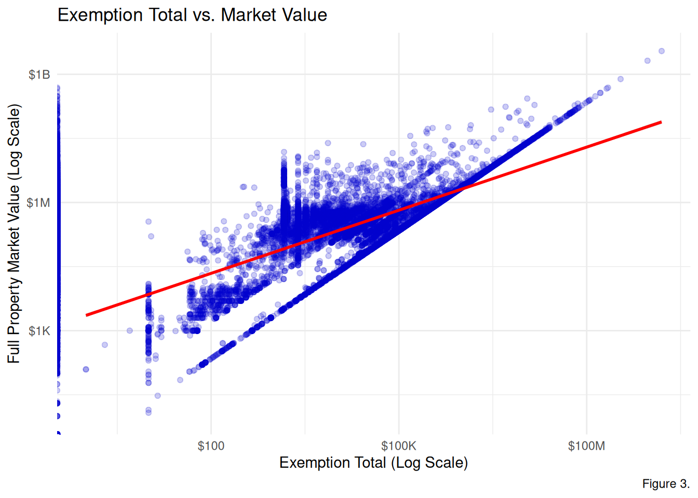
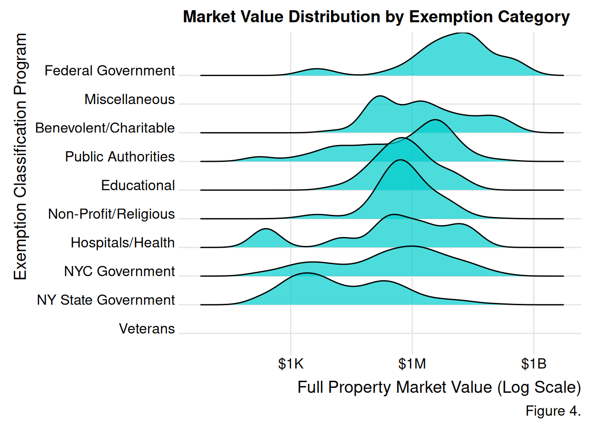
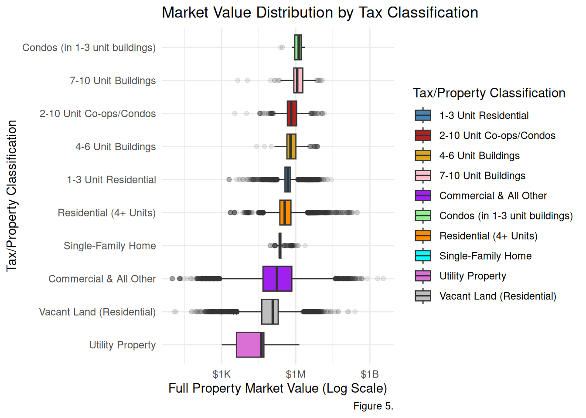
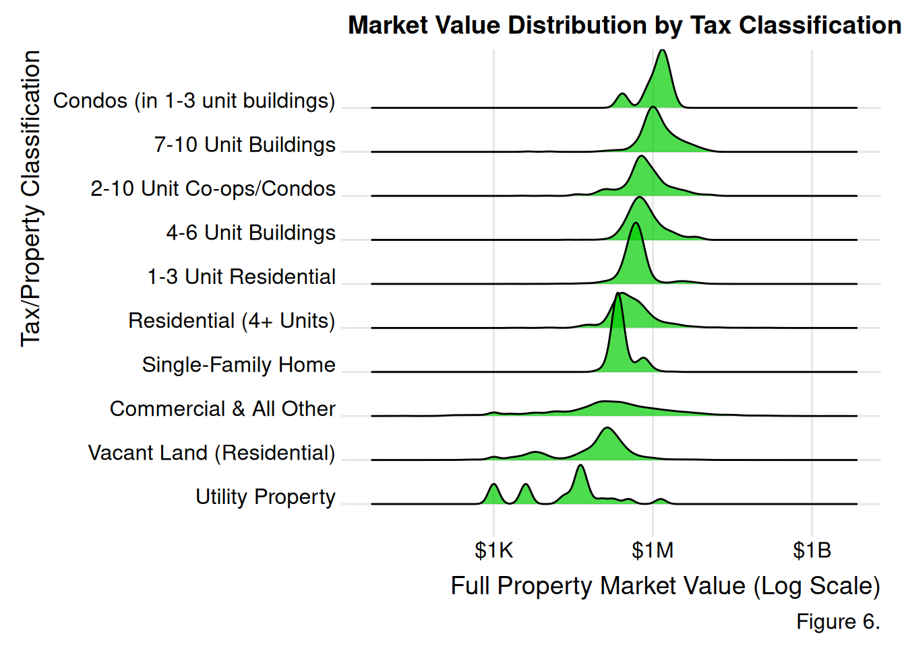
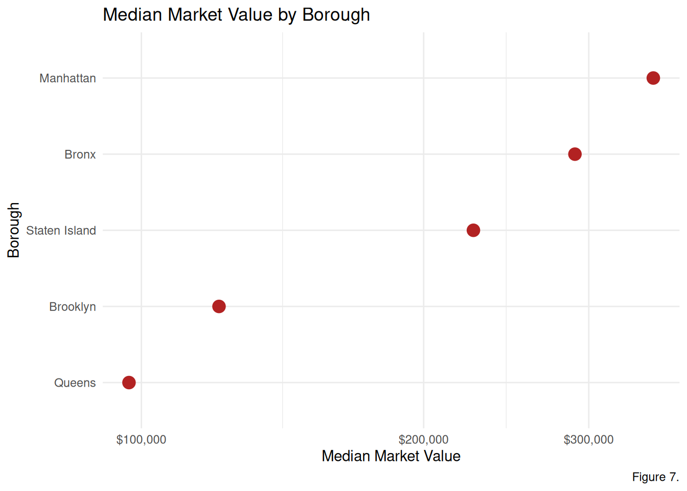
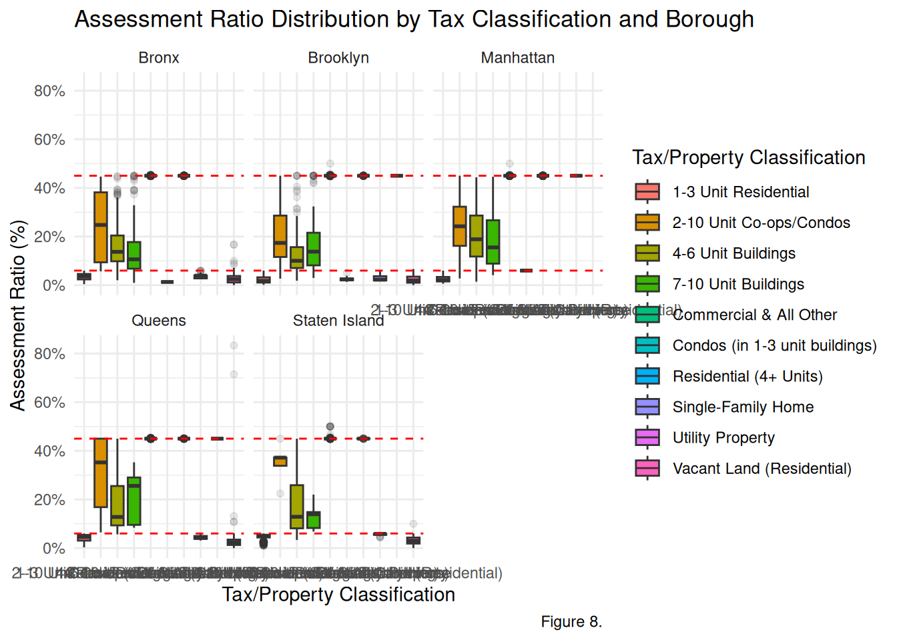

This project, devised from an interest in financial risk assessments, will explore New York City’s Property Valuation and Assessment Data. This chapter displays the exploratory data analysis and visualization of the City’s financial evaluations that determine tax revenues. Property assessments determine tax revenues, this identifying gaps between assessed property value and its market value is an important fiscal concern.
This project’s goal is to encourage financial data transparency by generating accessible and easy to understand visualizations that encourage public engagement with the city’s finances and property valuation. A better New York is one with more informed stakeholders!
This chapter will engage with the following key questions:
How do tax exemption programs influence property values?
What is the relationship between tax classification and market value?
How do tax exemption programs and property market value vary by borough?
How does the valuation gap vary by tax classification and borough?
6.2 Data
library(tidyverse)# -------------------------------SAMPLING----------------------------------# 1. Define the Base API URL for NYC Property Valuationbase_url <-"https://data.cityofnewyork.us/resource/yjxr-fw8i.csv"# 2. Construct specific queries for each borough (1-5)# Using $limit=10000 ensures a robust citywide sample of 50,000 rowsboro_queries <-paste0(base_url, "?$where=boro='", 1:5, "'&$limit=10000")# 3. Pull the data and fix the type mismatch error# Explicitly setting col_types prevents read_csv from guessing 'bble' incorrectlyPVA_stratified <-map_df(boro_queries, ~read_csv(.x, col_types =cols(bble =col_character(), # Forces BBLE to character to accommodate easement lettersboro =col_character(), # Forces Borough to character for consistent bindingtaxclass =col_character(), # Forces Tax Class to character (e.g., '1A', '2B')zip =col_character(), # Recommended: forces Zip to character to keep leading zeros.default =col_guess() # Allows R to guess the rest (usually numeric values))))# 4. Verify the distribution and column typesprint(dim(PVA_stratified))
The data used in this study is the NYC Property Valuation and Assessment Data, collected by the City government’s Department of Finance (DoF), and sourced from NYC Open Data. It contains property valuation and assessment data for 9.85 million New York City properties, with a collection of 40 variables.
The initial data export using an API endpoint was limited to 1,000 rows or observations. This form of data extraction created a sampling error, as only observations from the first three listed boroughs were included. To ensure the dataset used for analysis is representative of the city, this report uses a stratified sample of 50,000 observations exported via a SODA2 API endpoint in CSV format, ensuring the most up-to-date figures. This sampling method pulled in data from five distinct batches, one for each borough, using a limit of 10,000 rows per batch. These batches were then aggregated into a comprehensive and balanced dataset of 50,000 rows.
The research conducted in this chapter is targeted, using a “tidied” version of the originally sourced dataset, containing the following variables:
Variable Name
Description
Data Type
BORO
Classification of New York City’s five boroughs.
1 = Manhattan
2 = Bronx
3 = Brooklyn
4 = Queens
5 = Staten Island
Factor (Nominal)
TAXCLASS
Classification of property determining tax and assessment rates.
1 = 1-3 Unit Residential
1A = Single-Family Home
1B = Vacant Land (Residential)
1C = Condos (in 1-3 unit buildings)
2 = Residential (4+ Units)
2A = 4-6 Unit Buildings
2B = 7-10 Unit Buildings
2C = 2-10 Unit Co-ops/Condos
3 = Utility Property
4 = Commercial & All Other
Factor (Ordinal)
FULLVAL
The property’s market value.
Numeric (Continuous)
AVTOT
The property’s assessed value, including the land any structures on it.
Numeric (Continuous)
EXTOT
The total amount of the property’s assessed value that is not taxable.
Numeric (Continuous)
EXMPTCL
Classification for specific property tax exemption programs.
VI: Veterans exemptions
X1: NYC Government Owned (City agencies, parks, public schools).
X2: NY State Government Owned (State offices, authorities).
X3: Federal Government Owned (Post offices, federal courts).
X4: Public Authorities (e.g., MTA, Port Authority, Housing Authority).
X5: Private Non-Profit / Public Benefit (Religious, charitable, or educational organizations that are fully exempt).
X8: Hospitals / Health Facilities (Non-profit hospitals, clinics).
X9: Miscellaneous (Specialized non-profits or unique statutory exemptions).
Factor (Nominal)
The data dictionary used to define the variables was incomplete, requiring further outside research on property and real estate terminology and classifications.
6.2.2 Missing value analysis
library(redav)# Missing values for each variablecolSums(is.na(PVA_tidy)) %>%sort(decreasing =TRUE)
Figure 1. The Aggregated Missing Pattern Plot indicates that the exmptcl variable is the source of missing values in my tidied dataset. 47914 rows of this variable are missing. All the other variables are complete. The missing pattern in the exmptcl variable is logical and a reflection of NYC property taxes. Most of the properties are likely missing a value for exmptcl because most properties do not qualify for a government or non-profit tax break.
Figure 2. The Missingness by Borough and Property Type Plot indicates that Commercial & All Other properties have the lowest amount of missing data (roughly 80-85%), suggesting that these commercial properties have more recorded tax breaks than residential properties across all five boroughs. Besides that, Manhattan’s Single-Family Home bar is missing, reflecting the reality that there are not many existing single family homes in Manhattan.
6.3 Results
6.3.1 Tax Exemption Total and Market Values
library(scales)library(ggridges)# Figure 3. Scatterplotggplot(PVA_tidy, aes(x = extot, y = fullval)) +geom_jitter(alpha =0.2, color ="blue3") +geom_smooth(method ="lm", se =TRUE, color ="red") +scale_x_log10(labels =label_dollar(scale_cut =cut_short_scale())) +scale_y_log10(labels =label_dollar(scale_cut =cut_short_scale())) +theme_minimal() +labs(title ="Exemption Total vs. Market Value", x ="Exemption Total (Log Scale)",y ="Full Property Market Value (Log Scale)",caption ="Figure 3.")

Figure 3. The scatterplot displays the relationship between the total amount of the property’s assessed value that is not taxable and the full property market value. Evidently, there is a positive correlation as indicated by the regression line. Therefore, as property value increases, the exemption amount also increases. The diagonal cluster of points are likely 100% tax exempt properties because the exemption amount is approximately equal to the market value. The vertical cluster of points are properties with standardized exemption amounts.
Note: Due to the logarithmic scale, this plot only visualizes properties with a non-zero exemption total.
# Figure 4. Ridgeline PlotPVA_tidy %>%filter(!is.na(exmptcl)) %>%filter(extot >0& fullval >0) %>%ggplot(aes(x = fullval, y =fct_reorder(exmpt_code, fullval, .fun = median), fill = exmpt_code)) +geom_density_ridges(fill ="cyan3", alpha =0.7) +scale_x_log10(labels =label_dollar(scale_cut =cut_short_scale())) +theme_ridges() +labs(title ="Market Value Distribution by Exemption Category",x ="Full Property Market Value (Log Scale)",y ="Exemption Classification Program",fill ="Exemption Classification",caption ="Figure 4.")

Figure 4. The ridge-line plot illustrates the association between tax programs and full property market values. The veterans category is clustered toward the bottom left, suggesting that veteran tax programs are associated with properties with the lower market values (likely residential homes). Meanwhile, federal and public authorities, peak towards the right, meaning they have higher valuations. Categories with longer tails reflect the diversity in property market value of those agencies.
6.3.2 Tax Classifications and Market Value
# Figure 5. BoxplotPVA_tidy %>%ggplot(aes(x =fct_reorder(taxcl_code, fullval, .fun = median), y = fullval, fill = taxcl_code)) +geom_boxplot(outlier.alpha =0.1) +scale_y_log10(labels =label_dollar(scale_cut =cut_short_scale())) +scale_fill_manual(values =c("steelblue", "firebrick", "goldenrod", "pink", "purple", "lightgreen", "darkorange", "cyan", "orchid", "grey")) +theme_minimal() +coord_flip() +labs(title ="Market Value Distribution by Tax Classification",x ="Tax/Property Classification",y ="Full Property Market Value (Log Scale)",fill ="Tax/Property Classification",caption ="Figure 5.")

Figure 5. The boxplot indicates that condos and 7-10 unit residential properties have the highest median market value at around $1M. Meanwhile, utility properties have the lowest median market value at around $500K.
# Figure 6. Ridgeline PlotPVA_tidy %>%filter(fullval >0) %>%ggplot(aes(x = fullval, y =fct_reorder(taxcl_code, fullval, .fun = median))) +geom_density_ridges(fill ="green3", alpha =0.7) +scale_x_log10(labels =label_dollar(scale_cut =cut_short_scale())) +theme_ridges() +labs(title ="Market Value Distribution by Tax Classification",x ="Full Property Market Value (Log Scale)",y ="Tax/Property Classification",fill ="Tax/Property Classification",caption ="Figure 6.")

Figure 6. The ridge-line plot reveals that the distribution for utility properties are multimodal with three distinct peaks and a wide spread. There are likely three major types of utility properties. Vacant Land (Residential) and Condos (in 1-3 unit buildings) are bimodal with 2 peaks, suggesting two leading types of land properties. Commercial & All Other properties has a weak peak and long tails, with a median market value around $500-700k, highlighting that the distribution is influenced by outliers.
6.3.3 Market Value and Tax Exemption by Borough
# Figure 7. Cleveland Dot Plot boro_stats <- PVA_stratified %>%group_by(boro) %>%summarize(median_market_val =median(fullval, na.rm =TRUE) ) %>%mutate(boro_name =case_match(boro,"1"~"Manhattan","2"~"Bronx","3"~"Brooklyn","4"~"Queens","5"~"Staten Island" ))boro_stats %>%ggplot(aes(x = median_market_val, y =fct_reorder(boro_name, median_market_val))) +geom_point(size =4, color ="firebrick") +scale_x_log10(labels =label_dollar()) +theme_minimal() +labs(title ="Median Market Value by Borough",x ="Median Market Value", y ="Borough",caption ="Figure 7.")

Figure 7. The Cleveland Dot Plot confirms Manhattan properties have the greatest median market value, in comparison to all the other New York City boroughs. Meanwhile, Queens properties have the lowest median market value in comparison to all the other New York City boroughs.
6.3.4 Risk by Tax Classification and Borough
#---------------------------CALCULATING THE VALUATION GAP---------------------------------PVA_ratio <- PVA_stratified %>%filter(fullval >0) %>%mutate(assessment_ratio = avtot / fullval,boro_name =case_match(boro,"1"~"Manhattan", "2"~"Bronx", "3"~"Brooklyn","4"~"Queens", "5"~"Staten Island")) %>%mutate(taxcl_code =case_match(taxclass,"1"~"1-3 Unit Residential","1A"~"Single-Family Home","1B"~"Vacant Land (Residential)","1C"~"Condos (in 1-3 unit buildings)","2"~"Residential (4+ Units)","2A"~"4-6 Unit Buildings","2B"~"7-10 Unit Buildings","2C"~"2-10 Unit Co-ops/Condos","3"~"Utility Property","4"~"Commercial & All Other",.default = taxclass )) %>%filter(assessment_ratio >0& assessment_ratio <1)# Figure 8. Boxplotggplot(PVA_ratio, aes(x = taxcl_code, y = assessment_ratio, fill = taxcl_code)) +geom_boxplot(outlier.alpha =0.1) +facet_wrap(~boro_name) +geom_hline(yintercept =c(0.06, 0.45), linetype ="dashed", color ="red") +scale_y_continuous(labels = scales::label_percent()) +theme_minimal() +labs(title ="Assessment Ratio Distribution by Tax Classification and Borough",y ="Assessment Ratio (%)",x ="Tax/Property Classification",fill ="Tax/Property Classification",caption ="Figure 8.")

Figure 8. This graph was generated using a calculated assessment ratio, or the portion of a property’s market value (Market Value - fullval) that the city decides to tax (Assessed Total - avtot). The devised formula for the assessment ratio is \[avtot/fullval\]. It displays dashed lines at the 6% and 45% Assessment Ratio mark. These represent New York City’s target assessment ratio for residential homes and all other properties, respectively. When the assessment ratio is lower than the target, or dashed line, there is a valuation gap, meaning that the property based on its market value is under-taxed. Across all boroughs, the assessment ratios for 1-3 unit residential properties are consistently below the 6% benchmark, suggesting a valuation gap. Additionally, for 4+ unit residential properties, the assessment ratios across all boroughs are consistently below the 45% benchmark, suggesting a valuation gap. It is evident there is model risk in the city’s taxation of properties and their market value, which are under-assessed.
6.4 Conclusion
This analysis reveals that New York City’s property tax system and valuation assessments are generally consistent with real estate frameworks. However, there are model risks evident in the identified valuation gaps across different tax classifications and boroughs.
This study found that tax exemption programs are associated with property market value. Besides that, tax exemption programs are usually standardized for Veterans, while the highest dollar exemptions are granted to large-scale federal and publicly-owned properties.
Secondly, the valuation gap is the greatest in 4-6 unit buildings, 7-10 unit buildings, and 2-10 unit co-ops or condos, as they consistently fail to meet the 45% assessment ratio benchmark. This is an indication that these building types tend to be under-taxed relative to their current market value.
Nevertheless, some properties, particularly the Utility Proper are multimodal with high variability. Therefore, it is harder to create a model that will full capture the diversity of NYC’s real estate and property portfolio.
This study is limited by its stratified sampling, which only provided 50,000 observations. Additionally, due to the incompleteness in the data dictionary and code book, this project consulted with outside resources to supplement property and real estate knowledge. Nevertheless, the results still emphasize the need for greater transparency and model reforms for New York City’s properties.
In the future, this study would like to investigate with a socioeconomic lens, using demographic data to explore the effects of attributes such as age, gender, income, education, and location on property valuation, tax revenues, and home ownership. This would be key to understanding the social science of real estate and potential socioeconomic inequalities. Highlighting these gaps contribute to better policy change.